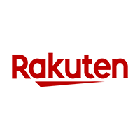

事業者向けか、登録や審査があるか。個人事業主と一般消費者の条件を分けて確認します。
「安い」だけで決めず、
自分が扱える条件で選ぶ。
仕入れ先には、事業者向けの卸サイトからリユース店、小売サイトまでさまざまな種類があります。この10選を入口に、扱いたい商品・使える予算・出品できる量に合う候補を探しましょう。
0円仕入れ先の一覧ではありません
商品代金がかかる仕入れ先の候補を紹介しています。掲載先で購入すれば利益が出る、すべての商品をメルカリで販売できる、という意味ではありません。
01
最初に見る3つの条件
仕入れ先・メーカーの販売条件と、販売先の出品ルールを確認。掲載写真の利用許可は別に確認します。
商品代・税・送料を合わせた総額、最低注文数、保管場所、出品できるペースを見ます。
02
仕入れ先10選を比較する
気になる候補の公式案内へ進み、ご自身の利用条件を確認してください。掲載順は、おすすめ順位ではありません。

ネット｜総合卸
NETSEA
衣類・雑貨などを、複数の卸企業から比較する候補。
購入前に確認
NETSEAの公式案内 ↗ビジネス利用を目的とする方向け。登録資格に加え、企業ごとの取引申請・最低注文数・送料・販路の制限を確認しましょう。
ネット｜事業者向け卸
スーパーデリバリー
衣類や生活雑貨など、商品と取引先の情報を見比べたいときに。
購入前に確認
スーパーデリバリーの公式案内 ↗事業情報の確認があります。開業準備中・ネット販売のみなど、ご自身の事業形態が入会条件に合うか確認しましょう。

ネット｜雑貨・美容・健康関連の卸
卸の達人
扱いたいジャンルを絞って商品を調べる候補。
購入前に確認
卸の達人の公式案内 ↗登録条件・注文単位・送料・販売条件を確認。商品の説明や広告文をそのまま転載せず、自分が扱える商品か判断しましょう。

ネット｜ネット販売向け卸
グッズステーション
ネット販売向けの商品を探し、注文数量と総額を比較する候補。
購入前に確認
グッズステーションの公式案内 ↗ロット（まとめて注文する数量）と、送料を含めた支払総額を確認。検品・返品条件、保管できる量も見ておきましょう。

ネット｜在庫品・リユース品など
SMASELL（スマセル）
衣類などの商品を、ショップやセットごとに検討する候補。
購入前に確認
SMASELL（スマセル）の公式案内 ↗セットの内訳・状態・数量と、ショップごとの配送・返品条件を確認。1点あたりの安さだけで判断しないこと。
店舗・ネット｜総合リユース
セカンドストリート
衣類・バッグ・雑貨など、状態を見ながら選びたいときに。
購入前に確認
セカンドストリートの公式案内 ↗店舗とネットでは確認できる情報が異なります。写真・傷・付属品をチェックし、不明点と返品条件は購入前に確認しましょう。
店舗・ネット｜専門ジャンルのリユース
ハードオフ／オフモール
家電・カメラ・楽器・ホビーなど、知識を生かして探す候補。
購入前に確認
ハードオフ／オフモールの公式案内 ↗動作確認の範囲・欠品・保証の有無を確認。故障箇所が分からないジャンク品は、安さだけで選ばないようにしましょう。
ネット（店舗もあり）｜本・メディア・ゲーム
ブックオフ公式オンラインストア
本・コミック・CD・DVD・ゲームなどを探す候補。
購入前に確認
ブックオフ公式オンラインストアの公式案内 ↗巻数・版・付録・ディスクの状態・送料を確認。同じタイトルでも内容や特典が異なるため、条件をそろえて比較しましょう。
ネット｜ブランド古着
ZOZOUSED
ブランド・サイズ・状態を見比べて衣類を選ぶ候補。
購入前に確認
ZOZOUSEDの公式案内 ↗コンディション説明・採寸・写真をセットで確認。現在の送料と返品条件も、購入前に確認しましょう。

ネット｜小売店の比較
楽天市場
複数のショップの商品・価格・条件を比べる候補。卸専用サイトではありません。
購入前に確認
楽天市場の公式案内 ↗店舗ごとの規約・数量制限・再販売の条件を確認。ポイントは条件や期限があるため、現金で残る利益と分けて考えましょう。
料金・取り扱い・利用条件は変更されます。登録・購入時の公式案内を確認してください。リンク先は外部サイトです。
03
買う前に調べること
仕入れ価格が安く見えても、売れる価格と費用が分からなければ判断できません。まずは購入せず、候補の商品を1つ選んで調べてみましょう。
近い条件の販売実績を見る
ブランド・型番・サイズ・状態などが近い売り切れ商品を比較。出品中の希望価格だけで見込額を決めないようにします。
費用を引いて考える
仕入れ代、仕入れ時の送料、販売手数料、発送費、梱包費などを整理。ポイントや将来の値上がりを当てにしない計算も確認します。
扱える数量を決める
季節や需要、検品・撮影に使える時間、保管場所を確認。まとめ買いで安くなる場合も、売れ残りまで考えましょう。
チェックは、このページを開いている間の確認用です。
利益の考え方を確認：在宅物販ロードマップ →04
セット仕入れという選択肢
アソート仕入れは、複数の商品が組み合わされたセットを仕入れる方法です。1点ずつ商品を探して選ぶ手間を減らせる場合がありますが、セットなら必ず安い・売れるというわけではありません。
内訳と総額を確認する
ジャンル・サイズ・状態・数量、送料込みの支払額を確認。中身を選べるか、返品できるかも見ておきます。
届いた後の作業も考える
検品・相場の確認・撮影・出品は必要です。扱いにくい物や売れ残りも想定し、自分で管理できる量を選びましょう。
仕入れ先だけでなく、仕入れ方も比較しよう
使える時間・予算・経験によって合う方法は変わります。在宅物販の進め方をもっと知りたい方は、無料勉強会で確認してみてください。
0円仕入れの在宅物販を知る
新しい一歩を、無料勉強会で。

具体的な始め方を、もっと詳しく知りたい方へ。
公式LINEに戻って「無料勉強会」と送ってください。